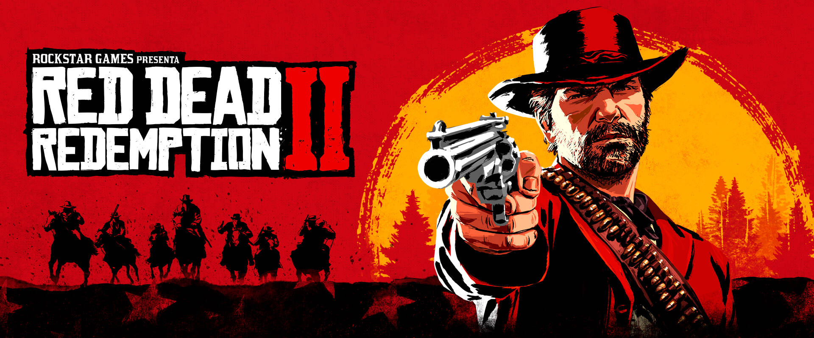

Desarrollador: Rockstar Games
Plataformas: PlayStation 4, Xbox One, PC
Género: Acción, Aventura, Mundo Abierto
Modo de juego: Un jugador, Multijugador en línea (Red Dead Online)
Fecha de lanzamiento: 26 de octubre de 2018
Precio aproximado: USD 29.99 - 59.99 (según plataforma y edición)